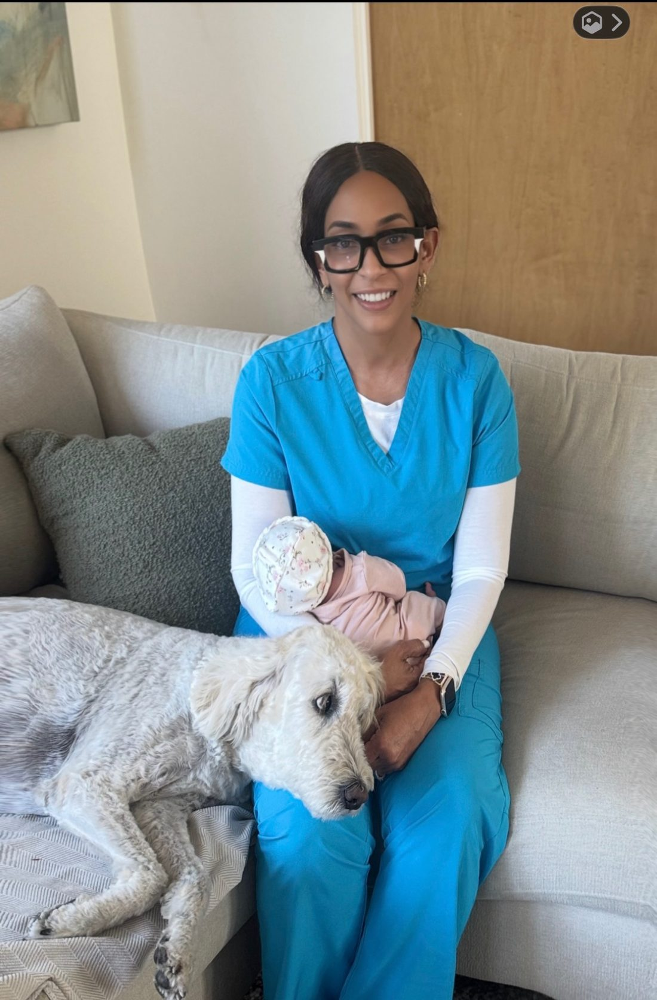
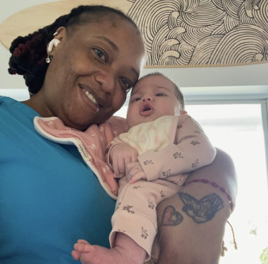
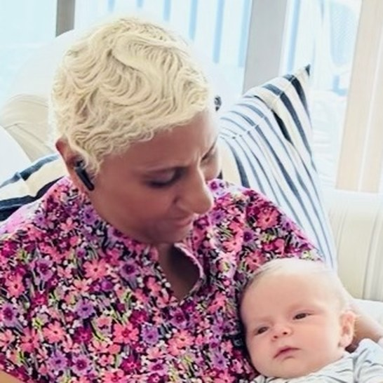

Certified specialist
A certified newborn care specialist with over two decades of hands-on experience and deep professional expertise.
About Beverly Baby Care
Beverly is a certified newborn care specialist who has spent more than twenty years inside families' homes during the earliest, most tender weeks — and she still begins every engagement the same way: by learning who this particular baby is.

Her story
A certified newborn care specialist with over two decades of experience, Beverly has built her reputation through highly personalized newborn support, hands-on parent guidance, and an extraordinary ability to understand each baby as an individual.
Having raised two children of her own, she brings both professional expertise and a mother's perspective to every family she supports. Her philosophy is to expand the innately ingrained attributes of each individual baby, rather than forcing rigid systems too early.
Families work with Beverly for a few days, for a week, or for months at a time — in their own homes, and sometimes travelling alongside them.
Expertise & philosophy
A certified newborn care specialist with over two decades of hands-on experience and deep professional expertise.
Having raised two children of her own, Beverly brings not only technical knowledge but genuine maternal wisdom.
Beverly never applies generic advice. Every recommendation is tailored to your specific baby's DNA, pace, and signals.
Introducing healthy rhythms early protects sleep, restores REM cycles, and helps parents function with confidence and emotional steadiness.
Expand the innately ingrained attributes of the individual baby — while guiding parents to feel calm, capable, and rested.
Beverly's beliefThe people behind the care
Beverly leads every engagement. When a family's needs call for additional hands, she works with specialists she knows and trusts.
Certified Newborn Care Specialist · Founder
A certified newborn care specialist with over two decades of experience, known for highly personalized newborn support, hands-on parent guidance, and an extraordinary ability to understand each baby as an individual. A mother of two.
✓ Certified Newborn Care SpecialistNewborn Care Specialist
With more than 35 years in newborn care, Carolyn brings exceptional experience, compassion, and calm to every family she supports. A mother and grandmother, she has cared for singletons and multiples, travels with families and their babies, and is passionate about helping newborn care integrate naturally into the entire household.
✓ 35+ Years · CPR/First Aid · CS Certified
Newborn Childcare Specialist
Angela has spent many years working as a newborn childcare specialist, bringing deep experience and genuine warmth into the homes she supports. A mother of four and grandmother of two, with hands-on caregiving experience from high-risk newborns through toddler years.
✓ Certified · In-Home Newborn CareEarly Newborn and Childhood Specialist
Natalie brings over ten years of childcare experience and an Associate's Degree in Early Childhood Education. She has professionally cared for children from newborns through 12 years old, with a focus on safe, nurturing, developmentally supportive environments.
✓ CPR & First Aid Certified
Licensed Practical Nurse · NCS Specialist
A licensed practical nurse with over 25 years of clinical experience, Debbie's true passion lies in newborn care. A devoted mother and grandmother, she brings professional expertise and deep lived experience to every family she serves. Debbie also travels internationally with clients, providing dedicated newborn support from the very first day home.
✓ LPN · Certified NCS SpecialistBegin your journey
Every family is different. Begin with a private consultation so Beverly can learn about your baby, your needs, and the support that would be most valuable for your family.